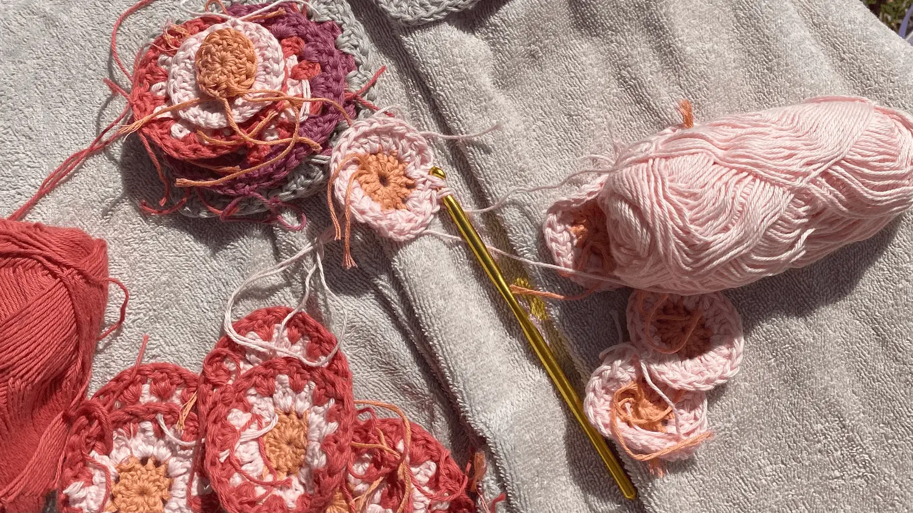

Om mig
Uddanelse
- Niels Brock Innovationsgymnasie
- 2017-2020
- Cross Channel kursus - Magasin
- 2022
- VERA skole for kunst og design
- 2023
Erfaring
- Enghave kaffe
- 2017-2019
- Flying Tiger Copenhagen
- 2018-2020
- Føtex
- 2020-2021
- Magasin
- 2021-2024
Hvem er jeg?
Jeg er meget kreative og elsker at hækle, lave perler, sy mm. Jeg er glad for mine hobbyer, da det er min måde at få ro på og udtrykke mig selv. Jeg bliver inspireret til nye hobbyer og projekter ude i verden, på internettet og gennem mine bekendte. Udover mine hobbyer er jeg glad for at være sammen med mine veninder og min familie.
